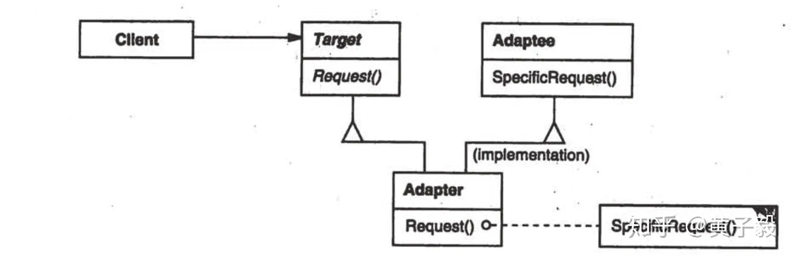
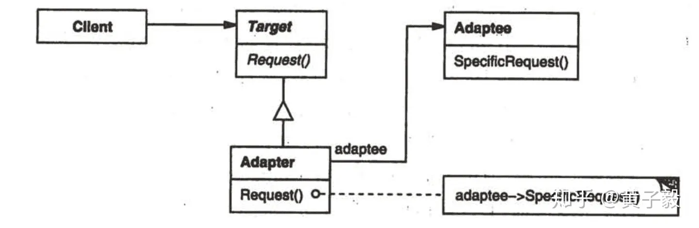
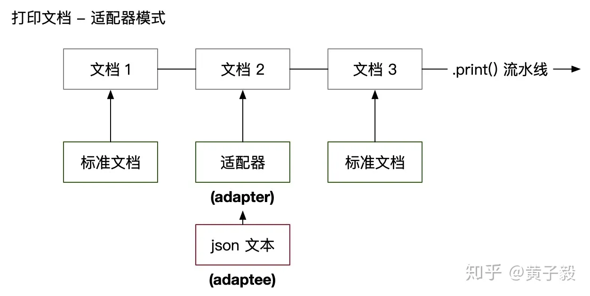

设计模式小记5 Adapter
设计模式小记 5
Adapter（适配器模式）
概论
Adapter（适配器模式）属于结构型模式，别名 wrapper，结构性模式关注的是如何组合类与对象，以获得更大的结构，我们平常工作大部分时间都在与这种设计模式打交道。
意图：将一个类的接口转换成客户希望的另一个接口。Adapter 模式使得原本由于接口不兼容而不能在一起工作的那些类可以一起工作。
这个设计模式的意图很好懂，就是把接口不兼容问题抹平。注意，也仅仅能解决接口不一致的问题，而不能解决功能不一致的问题。
举例子
如果看不懂上面的意图介绍，没有关系，设计模式需要在日常工作里用起来，结合例子可以加深你的理解，下面我准备了三个例子，让你体会什么场景下会用到这种设计模式。
接口转换器
插座的种类很多，我们都用过许多适配器，将不同的插头进行转换，可以在不替换插座的情况下正常使用。USB 接口转换也同样精彩，有将 TypeC 接口转换为 TypeA 的，也有将 TypeA 接口转换为 TypeC 的，支持双向转换。接口转换器就是我们在生活中使用到的适配器模式，因为厂商并没有生产一个新的插座，我们也没有因为接口不适配而换一个手机，一切只需要一个接口转换器即可，这就是运用设计模式的收益。
数据库 ORM
ORM 屏蔽了 SQL 这一层，带来的好处是不需要理解不同 SQL 语法之间的区别，对于通用功能，ORM 会根据不同的平台，比如 Postgresql、Mysql 进行 SQL 的转换。
对 ORM 来说，屏蔽不同平台的差异，就是利用适配器模式做到的。
API Deprecated
当一个广泛使用的库进行了含有 break change 的升级时，往往要留给开发者足够的时间去升级，而不能升级后就直接挂掉，因此被废弃的 API 要标记为 deprecated，而这种被废弃标记的 API 的实际实现，往往是使用新的 API 替代，这种场景正是使用了适配器模式，将新的 API 适配到旧的 API，实现 API Deprecated。
意图解释
上面三个例子都满足下面两个条件：
- API 不兼容：因为接口的不同；数据库 SQL 语法的不同；框架 API 的不同。
- 但能力已支持：插座都拥有充电或读取能力；不同的 SQL 都拥有查询数据库能力；新 API 覆盖了旧 API 的能力。这样就可以通过适配器满足 Adapter 的意图：
意图：将一个类的接口转换成客户希望的另一个接口。Adapter 模式使得原本由于接口不兼容而不能在一起工作的那些类可以一起工作。
使用场景
使用一个已经存在的类，但是他的接口不符合我们的需求
创建一个可以复用的类，它可以和其他不相关的类一块协同工作
结构图
适配器的实现分为继承与组合模式。
下面是名词解释：
Adapter适配器，把Adeptee适配成Target。Adaptee被适配的内容，比如不兼容的接口。Target适配为的内容，比如需要用的接口。
继承：

适配器继承 Adaptee 并实现 Target，适用场景是 Adaptee 与 Target 结构类似的情况，因为这样只需要实现部分差异化即可。
组合：

组合的拓展性更强，但工作量更大，如果 Target 与 Adaptee 结构差异较大，适合用组合模式。
代码例子
下面例子使用 typescript 编写。
typescript
继承：
interface ITarget {
// 标准方式是 hello
hello: () => void
}
class Adaptee {
// 要被适配的类方法叫 sayHello
sayHello() {
console.log('hello')
}
}
// 适配器继承 Adaptee 并实现 ITarget
class Adapter extends Adaptee implements ITarget {
hello() {
// 用 sayHello 对接到 hello
super.sayHello()
}
}组合：
interface ITarget {
// 标准方式是 hello
hello: () => void
}
class Adaptee {
// 要被适配的类方法叫 sayHello
sayHello() {
console.log('hello')
}
}
// 适配器继承 Adaptee 并实现 ITarget
class Adapter implements ITarget {
private adaptee: Adaptee
constructor(adaptee: Adaptee) {
this.adaptee = adaptee
}
hello() {
// 用 adaptee.sayHello 对接到 hello
this.adaptee.sayHello()
}
}实现（java）
我们有一个 MediaPlayer 接口和一个实现了 MediaPlayer 接口的实体类 AudioPlayer。默认情况下，AudioPlayer 可以播放 mp3 格式的音频文件。
我们还有另一个接口 AdvancedMediaPlayer 和实现了 AdvancedMediaPlayer 接口的实体类。该类可以播放 vlc 和 mp4 格式的文件。
我们想要让 AudioPlayer 播放其他格式的音频文件。为了实现这个功能，我们需要创建一个实现了 MediaPlayer 接口的适配器类 MediaAdapter，并使用 AdvancedMediaPlayer 对象来播放所需的格式。
AudioPlayer 使用适配器类 MediaAdapter 传递所需的音频类型，不需要知道能播放所需格式音频的实际类。AdapterPatternDemo 类使用 AudioPlayer 类来播放各种格式。

步骤 1
为媒体播放器和更高级的媒体播放器创建接口。
MediaPlayer.java
public interface MediaPlayer {
public void play(String audioType, String fileName);
}AdvancedMediaPlayer.java
public interface AdvancedMediaPlayer {
public void playVlc(String fileName);
public void playMp4(String fileName);
}步骤 2
创建实现了 AdvancedMediaPlayer 接口的实体类。
VlcPlayer.java
public class VlcPlayer implements AdvancedMediaPlayer{
@Override
public void playVlc(String fileName) {
System.out.println("Playing vlc file. Name: "+ fileName);
}
@Override
public void playMp4(String fileName) {
//什么也不做
}
}Mp4Player.java
public class Mp4Player implements AdvancedMediaPlayer{
@Override
public void playVlc(String fileName) {
//什么也不做
}
@Override
public void playMp4(String fileName) {
System.out.println("Playing mp4 file. Name: "+ fileName);
}
}步骤 3
创建实现了 MediaPlayer 接口的适配器类。
MediaAdapter.java
public class MediaAdapter implements MediaPlayer {
AdvancedMediaPlayer advancedMusicPlayer;
public MediaAdapter(String audioType){
if(audioType.equalsIgnoreCase("vlc") ){
advancedMusicPlayer = new VlcPlayer();
} else if (audioType.equalsIgnoreCase("mp4")){
advancedMusicPlayer = new Mp4Player();
}
}
@Override
public void play(String audioType, String fileName) {
if(audioType.equalsIgnoreCase("vlc")){
advancedMusicPlayer.playVlc(fileName);
}else if(audioType.equalsIgnoreCase("mp4")){
advancedMusicPlayer.playMp4(fileName);
}
}
}步骤 4
创建实现了 MediaPlayer 接口的实体类。
AudioPlayer.java
public class AudioPlayer implements MediaPlayer {
MediaAdapter mediaAdapter;
@Override
public void play(String audioType, String fileName) {
//播放 mp3 音乐文件的内置支持
if(audioType.equalsIgnoreCase("mp3")){
System.out.println("Playing mp3 file. Name: "+ fileName);
}
//mediaAdapter 提供了播放其他文件格式的支持
else if(audioType.equalsIgnoreCase("vlc")
|| audioType.equalsIgnoreCase("mp4")){
mediaAdapter = new MediaAdapter(audioType);
mediaAdapter.play(audioType, fileName);
}
else{
System.out.println("Invalid media. "+
audioType + " format not supported");
}
}
}步骤 5
使用 AudioPlayer 来播放不同类型的音频格式。
AdapterPatternDemo.java
public class AdapterPatternDemo {
public static void main(String[] args) {
AudioPlayer audioPlayer = new AudioPlayer();
audioPlayer.play("mp3", "beyond the horizon.mp3");
audioPlayer.play("mp4", "alone.mp4");
audioPlayer.play("vlc", "far far away.vlc");
audioPlayer.play("avi", "mind me.avi");
}
}步骤 6
执行程序，输出结果：
Playing mp3 file. Name: beyond the horizon.mp3
Playing mp4 file. Name: alone.mp4
Playing vlc file. Name: far far away.vlc
Invalid media. avi format not supportedC++中
我们需要在C++中尝试公共继承Target类（就是客户类），私有继承我们的被代理类（也就是库类）
这样我们就会使用桥接器的公共接口来配适我们的开发，从而封装我们的库私有接口。
我们来举个例子
#include <iostream>
#define MSG(X) std::cout << X << std::endl;
class AbsProduct{
public:
virtual ~AbsProduct() = default;
};
class ProductA : public AbsProduct
{
public:
virtual void processInA(){
MSG("Process in A method");
}
};
class ProductB : public AbsProduct
{
public:
virtual void processInB(){
MSG("Process in B method");
}
};
class ProcessInAvailableProductAbs
{
public:
virtual void process() = 0;
};
class ProcessInAvailableProduct : public ProcessInAvailableProductAbs , private ProductA, private ProductB
{
public:
enum class SupportClass{
PRO_A,
PRO_B
};
ProcessInAvailableProduct() = delete;
ProcessInAvailableProduct(SupportClass _class){
switch (_class) {
case SupportClass::PRO_A:
pro = new ProductA;
break;
case SupportClass::PRO_B:
pro = new ProductB;
break;
default:
break;
}
choice = _class;
}
virtual void process() override{
switch (choice) {
case SupportClass::PRO_A:
{
ProductA* a = dynamic_cast<ProductA*>(pro);
a->processInA();
}break;
case SupportClass::PRO_B:
{
ProductB* b = dynamic_cast<ProductB*>(pro);
b->processInB();
}break;
}
}
private:
AbsProduct* pro;
SupportClass choice;
};
int main()
{
ProcessInAvailableProduct solution(ProcessInAvailableProduct::SupportClass::PRO_A);
solution.process();
ProcessInAvailableProduct solution2(ProcessInAvailableProduct::SupportClass::PRO_B);
solution2.process();
}弊端
使用适配器模式本身就可能是个问题，因为一个好的系统内部不应该做任何侨界，模型应该保持一致性。只有在如下情况才考虑使用适配器模式：
- 新老系统接替，改造成本非常高。
- 三方包适配。
- 新旧 API 兼容。
- 统一多个类的接口。一般可以结合工厂方法使用。
总结
适配器模式也复合开闭原则，在不对原有对象改造的前提下，构造一个适配器就能完成模块衔接。
适配器模式的实现分为类与对象模式，类模式用继承，对象模式用组合，分别适用于 Adaptee 与 Target 结构相似与结构差异较大的场景，在任何情况下，组合模式都是灵活性最高的。
最后用一张图概括一下适配器模式的思维：

复盘：
意图：将一个类的接口转换成客户希望的另外一个接口。适配器模式使得原本由于接口不兼容而不能一起工作的那些类可以一起工作。
主要解决：主要解决在软件系统中，常常要将一些”现存的对象”放到新的环境中，而新环境要求的接口是现对象不能满足的。
何时使用： 1、系统需要使用现有的类，而此类的接口不符合系统的需要。 2、想要建立一个可以重复使用的类，用于与一些彼此之间没有太大关联的一些类，包括一些可能在将来引进的类一起工作，这些源类不一定有一致的接口。 3、通过接口转换，将一个类插入另一个类系中。（比如老虎和飞禽，现在多了一个飞虎，在不增加实体的需求下，增加一个适配器，在里面包容一个虎对象，实现飞的接口。）
如何解决：继承或依赖（推荐）。
关键代码：适配器继承或依赖已有的对象，实现想要的目标接口。
应用实例： 1、美国电器 110V，中国 220V，就要有一个适配器将 110V 转化为 220V。 2、JAVA JDK 1.1 提供了 Enumeration 接口，而在 1.2 中提供了 Iterator 接口，想要使用 1.2 的 JDK，则要将以前系统的 Enumeration 接口转化为 Iterator 接口，这时就需要适配器模式。 3、在 LINUX 上运行 WINDOWS 程序。 4、JAVA 中的 jdbc。
优点： 1、可以让任何两个没有关联的类一起运行。 2、提高了类的复用。 3、增加了类的透明度。 4、灵活性好。
缺点： 1、过多地使用适配器，会让系统非常零乱，不易整体进行把握。比如，明明看到调用的是 A 接口，其实内部被适配成了 B 接口的实现，一个系统如果太多出现这种情况，无异于一场灾难。因此如果不是很有必要，可以不使用适配器，而是直接对系统进行重构。 2.由于 JAVA 至多继承一个类，所以至多只能适配一个适配者类，而且目标类必须是抽象类。
使用场景：有动机地修改一个正常运行的系统的接口，这时应该考虑使用适配器模式。
注意事项：适配器不是在详细设计时添加的，而是解决正在服役的项目的问题。